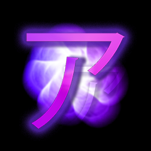
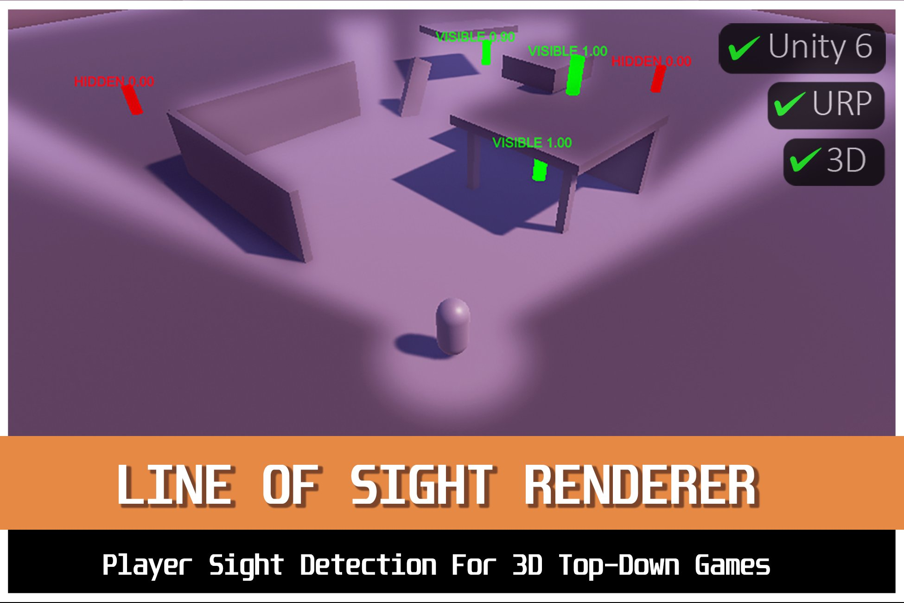

Focused, well-documented tools for Unity developers.

Player sight detection for 3D top-down and isometric games. Exact 3D occlusion, terrain support, and gameplay visibility queries that share one source of truth with the visuals.
View on Asset Store